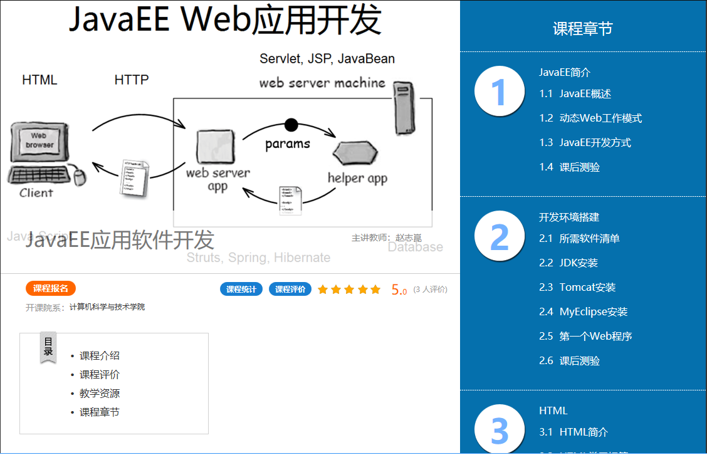

（点击上面的链接跳转到超星泛雅平台的课程主页）
本课程讲解JavaEE平台开发Web应用的基本技术。课程前半部分讲解传统的Java Web开发技术，包括HTML、Servlet、JSP、内置对象、JavaBean、MVC设计模式等。课程后半部分介绍轻量级框架，包括Struts2、Hibernate、Spring等。课程也简单介绍了Web前端开发技术，包括CSS、JavaScript和Ajax技术。
本课程每一个知识点都提供了简单但典型的例子，使用的开发环境是MyEclipse+Tomcat。课程前半部分围绕着用户登录验证的例子，分别用Servlet、JSP、JSP+JavaBean、JSP+Servlet+JavaBean等方式来实现用户登录验证的功能。这一顺序遵循了JavaEE平台的发展脉络，并且可以通过对同一功能的不同实现方式的分析和比较，明白每种实现方式的优劣，理解之所以这样发展的原因。这一部分的最后，在用户登录验证功能的基础上，通过增加用户的“增删改查”功能，实现一个简单的用户管理系统。课程后半部分继续使用用户管理系统的例子，介绍了：用Struts2实现用户管理系统的各项功能，用MySQL数据库实现用户列表数据的持久化，用Hibernate采用面向对象的方式操作数据库，用Spring的容器管理JavaBean以及面向切面的编程，用Ajax方式实现用户名查重。
通过本课程的学习，学生应该能够掌握传统Java Web开发技术，了解轻量级框架Struts2、Hibernate、Spring以及Web前端开发技术。